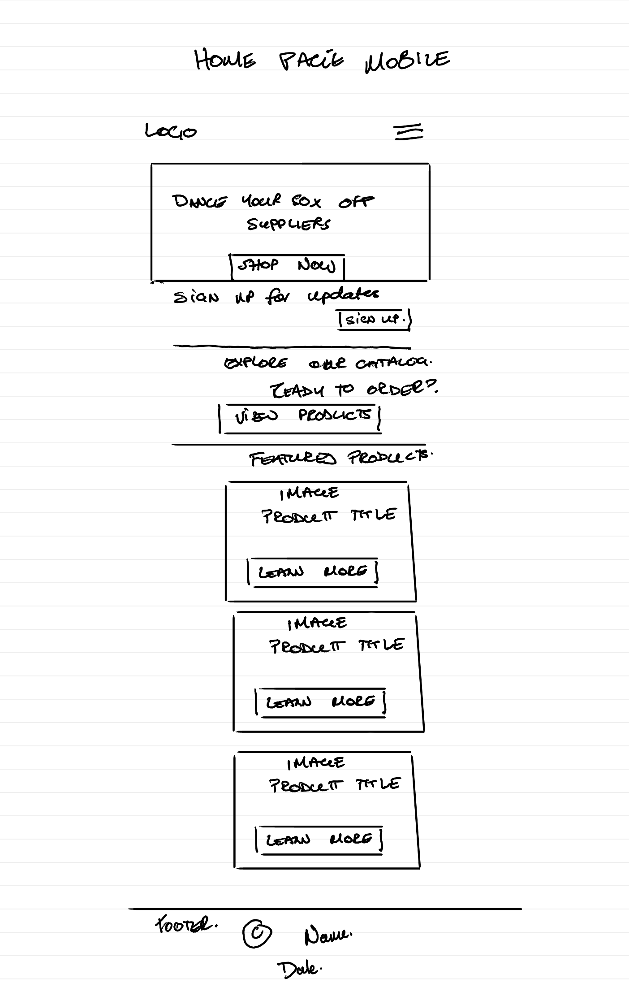
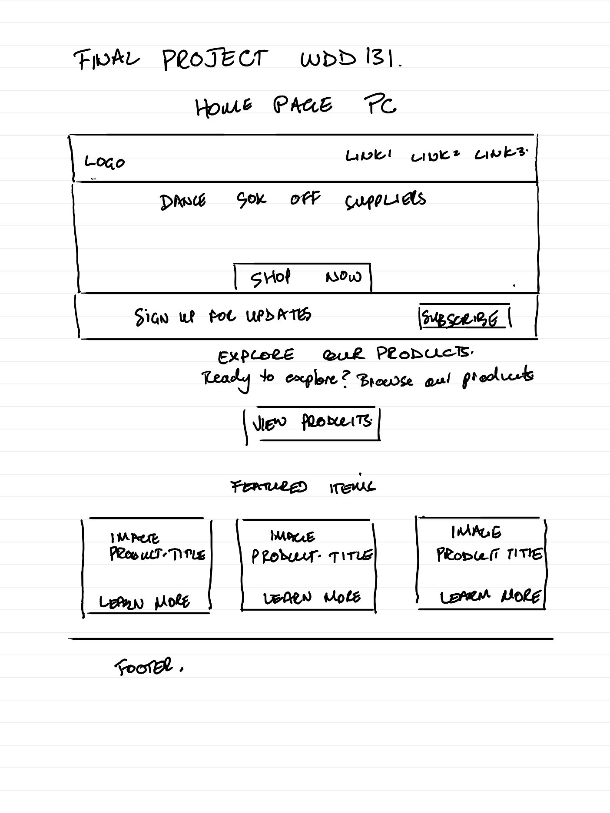

Website Planning Document
Dance Your Sox Off Suppliers – a supplier specializing in dance shoes, costumes, and accessories. The name is playful, memorable, and directly tied to the dance industry.
The site provides a hub for dancers, studios, and event organizers to explore available products, learn about supplier services, and place inquiries or orders. It will also share resources such as costume care tips and event highlights.

Logo + hamburger menu, hero banner, stacked product highlights, contact form at bottom.

Logo + horizontal nav bar, full‑width hero banner, product catalog grid (3–4 columns), footer with contact form and resources.